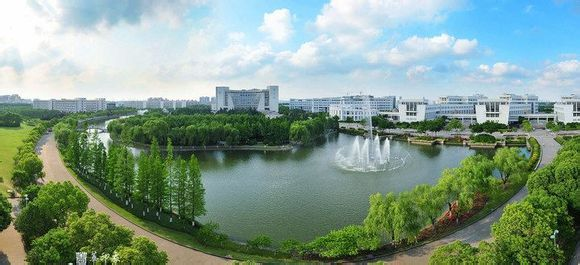

“教育数学”是张景中院士根据欧几里德的《几何原本》、柯西的《分析教程》和布尔巴基的《数学原理》等诸位教育数学大师的著名范例，创造性地提出并积极倡导的一个全新的理论。多年来这个领域出现了一系列的成果，经过不断的研究、实验，已经发展成为一门全新的学科。该学科的发展对于解决我国的数学教育的提高水平、拓广视野、改变方法、降低难度等问题，将提出各种可行方案，对我国的教育事业的发展产生重大影响。这门学科的任务是：基于数学教育的需要，根据教育数学的规律，对数学研究成果及数学教材进行数学上的再创造式的整理，提供教学法加工的材料。它是介于教育学与数学之间的以数学为主体的新兴的、交叉学科。教育数学是一个全新的理论、一门全新的学科，教育数学的发展，必将对我国的数学教育事业起着巨大的推动作用。
基于“教育数学”的理念，本学术年会将主要围绕“教育数学的创新与分享”进行学术研讨与交流。主报告嘉宾和与会代表学术论文交流主要围绕几个方面进行，1）教育数学创新展望；2）数学课堂mooc应用的精彩案例；3）微积分教学改革基础的实践；4）基础教育改革前景。
上海市高校一流学科―数学
上海市高原学科―数学